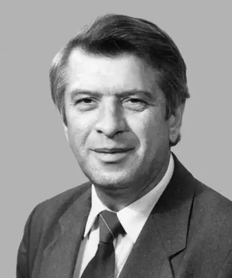

Народився в с. Шпичинці Вчорайшенського (нині Ружинського) району Житомирської області.
Перед Другою світовою війною родина переселилася на хутір Загайпіль Турбівського району Вінницької області (нині у межах Турбівської селищної ради). Тут, а потім у селищі Турбові минули його дитячі літа.
Закінчив Турбівську десятирічку, а потім Львівський лісотехнічний інститут (1962). Три роки працював у лісопроектній експедиції в м. Ірпінь, після чого став журналістом. Працюючи в районній газеті, закінчив факультет журналістики Київського державного університету імені Т. Г. Шевченка (1973). Перед 1991 роком випускав газету "Київський час" Київської обласної організації Української республіканської партії. Потім працював у газеті "Хрещатик", редактором відділу газети "Культура і життя". Помер 2015 року. Василь Заєць — автор збірок віршів для дітей "Боброве новосілля" (1970), "Льон посіяла зозуля" (1973), "Голубий дзвоник" (1976), "А ти, жабко, не сиди" (1986), "Шипшинові ліхтарі" (1988), "Семибарвний килимок" (1993), "Пелюстинки пахнуть медом" (2006), "Вальс кленової крилатки" (2006), "Сонячні ковалі" (2006), "Скрипка на сінокосі" (2008), "Посланець від сонечка" (2008). З-під пера В. Зайця вийшла низка ліричних та публіцистичних книг: "Громова криниця" (2004), "Пісня помаранчевого містечка" (2004), "Стрічка помаранчева, оранжевий цвіт" (2005), "Повстанські вишні" (2005), "Катруся" (2006), "Розмова з донею" (2007), "Хліб від брата", "Дорогі хлібини сорок першого" (обидві — 2009), "З поля вітер повіває" (2010). Основні мотиви поезії члена Національної спілки письменників України (від 2005 року) Василя Зайця — доброта, щирість, ніжність, любов до життя, людини, рідної Батьківщини.